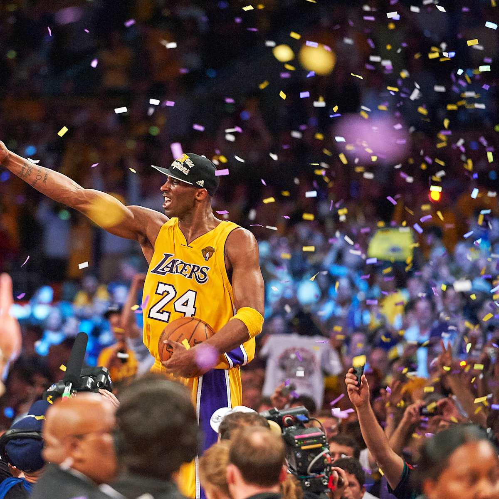

Los Angeles Lakers — АҚШ-тың Калифорния штатындағы Лос-Анджелес қаласында орналасқан кәсіби баскетбол командасы. Олар NBA-ның Батыс конференциясының Тынық мұхит дивизионында ойнайды және лига тарихындағы ең танымал, ең табысты клубтардың бірі. Команда 1947 жылы Миннеаполисте құрылып, 1960 жылы Лос-Анджелеске көшті. Lakers өз ойындарын әйгілі Crypto.com Arena аренасында өткізеді.
Lakers — 17 дүркін NBA чемпионы, бұл көрсеткіш бойынша NBA тарихындағы ең көп жеңіске жеткен командалардың бірі. Команда тарихында бірнеше алтын дәуір болды:
1980-жылдардағы «Showtime» дәуірі, Мэджик Джонсон мен Карим Абдул-Джаббар басқарған кезең. Бұл стиль жылдам шабуыл, әсем пас және жоғары темппен ерекшеленді.
2000-жылдар басындағы Шакил О’Нил – Коби Брайант дуэті, олар қатарынан 3 чемпиондық әкелді (2000–2002).
2009–2010 жылдары Коби Брайант командаға тағы екі чемпиондық сыйлады.
2020 жылы, Леброн Джеймс пен Энтони Дэвис Lakers-ті пандемия маусымында чемпион етті.
Lakers әр дәуірде жұлдыздарға толы команда болып, әлемдегі ең ірі жанкүйер қауымына ие клубтардың бірі саналады.

Коби Брайант — Los Angeles Lakers тарихындағы ең аңыз ойыншы. «Black Mamba» лақап атымен танылған ол 20 жыл бойы тек Lakers құрамында ойнап, команданы 5 чемпиондыққа алып келді. Коби өзінің еңбекқорлығымен, ешкімге ұқсамайтын бәсекелестік рухымен және шешуші сәттерде керемет ойнай білуімен әйгілі. Оның №8 және №24 жейделері клубтан мәңгілікке retirada етілген.